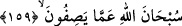
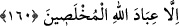

kavli onların “Melekler Allah’ın kızlarıdır” sözlerinden ibarettir. Ancak bu durum
bilindiği halde burada tekrar zikredilmesi şimdi ifade edilecek olan “Andolsun, cinler
de kendilerinin hesap yerine götürüleceklerini bilirler” sözünün bir hazırlık
cümlesidir. Bu sözle kastedilen şey müşriklerin Allah ile melekler arasında iddia
ettikleri nispet ve ortaklık konusunda onları iyice yalanlamaktır. Zira cinler, işin iç
yüzünü müşriklerden daha iyi bilirler. Cinler de bu konuda müşrikleri tekzip eder;
kendilerinin de bu sözden dolayı cehennemde ebedi olarak azap edileceklerini bilir ve
buna kesin olarak hükmederler.
Bu söz Arapların “Ben falanca kimsenin akıllı biri olduğuna şahitlik ederim. Elbette
falanca kişi akıllıdır” sözü gibidir. Sonra Allah Teâlâ onların Allah’a nispet ettikleri bu
yalan ve iftiradan kendi zâtını tenzih etmiş ve şöyle buyurmuştur:
159. Allah, onların isnat edegeldiklerinden yücedir, münezzehtir.
“Allah, onların isnat edegeldiklerinden” evlat ve soy isnadından “yücedir,
münezzehtir.”
Bu söz, onların ahmakça ve tamamen yanlış ve eğri olan bu isnatlarının ilginç ve
hayret verici olduğunu ifade etmektedir.
160. Allah’ın ihlâsa erdirilmiş kulları müstesnadır (onlar azap görmeyeceklerdir).
“Allah’ın” lütüf ve keremiyle şüphe pisliklerinden “ihlâsa erdirilmiş” ve kendilerini
aklın mûcebince hareket etmeye muvaffak kılmış olduğu “kulları” Allah Teâlâ’yı böyle
nitelemekten uzak ve “müstesnadır (onlar azap görmeyeceklerdir).
Burada Ebü’s-Suûd (rh.a.) “Allah’ın ihlâsa erdirilmiş kulları müstesnadır (onlar
azap görmeyeceklerdir)” kavlini “Andolsun, cinler de kendilerinin hesap yerine
götürüleceklerini bilirler” cümlesine mâtuf olan bir kavil takdiri ile değerlendirmiştir.
Yani melekler müşriklerin Allah’a yaptıkları bu haksız ve yanlış isnattan dolayı
müşriklerin azap edileceklerini bildiler ve “Biz Allah’ı onların nispet ettikleri evlat ve
nesep ortaklığından tenzih ederiz” dediler, demektir. Yine bizim de aralarında
bulunduğumuz ihlasa erdirilmiş (muhlas) kullar Allah’ı böyle nitelemekten berî ve
uzaktırlar. Bilakis biz Allah Teâlâ’yı yüce sıfatlarla niteleriz. Buna göre “Allah’ın
ihlâsa erdirilmiş kulları müstesnadır (onlar azap görmeyeceklerdir)” sözü de
meleklerin sözü olarak hikaye edilmiştir.